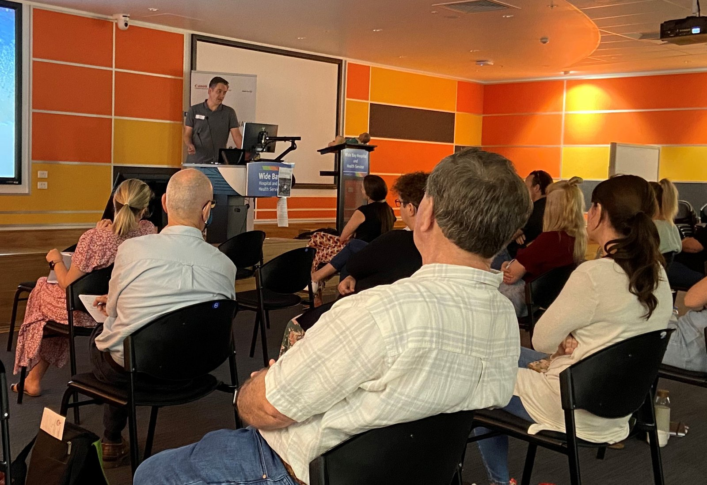

Appendicitis in children
Diagnostic accuracy studies and decision-support work on childhood appendicitis.
My research is clinical and practical: diagnostic accuracy in paediatric ultrasound, access to imaging for regional and First Nations families, patient safety, and the sonographer workforce. The full record is on ORCID, Google Scholar and PubMed.
Diagnostic accuracy studies and decision-support work on childhood appendicitis.
Ultrasound of the kidneys and urinary tract in children.
Education and support for regional sites, including communities with higher First Nations representation.
Why children do not attend booked imaging, and what can be done about it.
Transcranial Doppler for children having cardiac surgery or ECMO.
Audits that benchmark practice and lead to change.
Work-integrated learning and sonographer training pathways.
What AI means for sonographer competency and curriculum.
Ultrasound is often the first test for a child with acute abdominal pain, and in rural and regional Queensland it can shape the decision to transfer that child to a tertiary hospital. Transfers cost families time and money, and they cost the health system a good deal more. This work began as an evidence-gathering audit of those transfers, used to benchmark practice and target support, and it led to changes in how I support regional colleagues.
The audit was an evidence-gathering exercise. We reviewed children transferred to a quaternary paediatric hospital for acute abdominal pain over a 12-month period, comparing imaging and diagnoses at the transferring site with those at the receiving hospital. The aim was to benchmark practice, identify where support was most needed, and target education and clinical support at those sites and conditions.
The findings pointed to where education and clinical support could reduce potentially unnecessary transfers. Because every child in the cohort had been transferred, the audit guides where support is needed and is not a measure of any individual service.
Reddan T, Halligan T, Corness J. An audit of inter-hospital transfers of children with abdominal pain and their associated medical imaging findings. Sonography. 2022;9:23–28. doi:10.1002/sono.12291

Workshops and content for regional centres were shaped around the gaps the evidence identified. See the regional workshop table
At regional and rural meetings I now offer my contact details explicitly. Having met in person, colleagues are more likely to ask for help.
Following workshops, there has been regular feedback sought about examination quality from colleagues in Darling Downs, Rockhampton, Hervey Bay, and the Sunshine Coast.
The next phase builds on that contact. I am exploring how emerging telehealth platforms could make case collaboration contemporaneous for complex cases, support coaching and confidence-building for sonographers at smaller sites, and extend online workshops with live, case-based discussion. The aim is the same as the original audit: better local imaging decisions, and fewer transfers that were not needed.
The problem. Children who need heart surgery or extracorporeal membrane oxygenation (ECMO) often have a neck vessel cannulated or clamped, which can interrupt blood flow to the brain. If the Circle of Willis, the ring of arteries that shares flow around the brain, is incomplete, that interruption can cause ischaemia or stroke.
What we did. Since 2019 we have used duplex transcranial Doppler on a radiology-grade ultrasound system to survey the Circle of Willis at the bedside before surgery or cannulation. Manual carotid compression tests collateral flow where a segment looks absent or small, and the paper sets out the technique and its main pitfall, mistaking the anterior choroidal artery for a small posterior communicating artery. An incomplete circle lets the surgical team plan neuroprotection and adjust their approach before they begin.
What changed. The assessment became standard practice in 2022. Between July 2019 and June 2024, 720 children were screened with no major adverse events reported, and no catastrophic infarcts related to cervical cannulation have occurred since the protocol began. It needs no radiation and can be done at the bedside, where CT and MRI are harder to arrange.
Sources: Reddan T, Malouf M, Venugopal P, Powell J. J Med Radiat Sci 2025;73(Suppl 2):S109-S116. doi:10.1002/jmrs.845. Screening numbers from the CHQ Research Impact Report 2024 (p. 8).